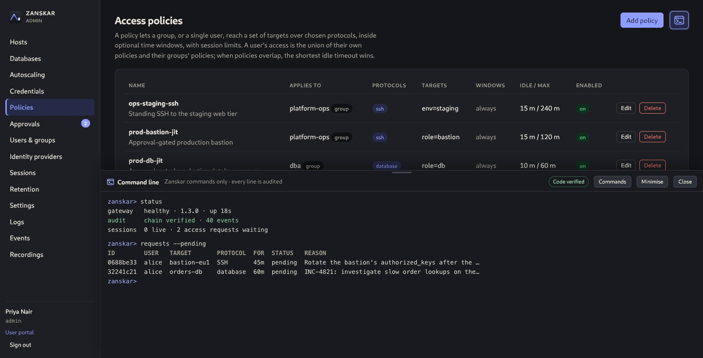
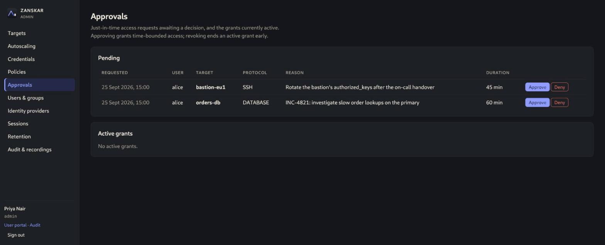

RELEASE NOTES
Zanskar v1.13.0
Latest release
What a walk through the live console found, fixed. A session’s tab offers to connect again when it ends, and the gateway pulls the images sessions need before the first one asks for them. The recording player answers its keys straight away and fits the window; a session’s tab shows one dark “Connecting” screen from the click to the session; a host action’s “now” is a box under the wait it sets to 0; the Autoscaling page says in a sentence why the gateway has no AWS identity; a protocol reads the same on every page; Delete lives where a policy or a provider is opened; and a page no longer reads the same thing twice as it opens.
Install Release on GitHub The full notes
Upgrading from 1.12.0 to 1.13.0
Install the new package, or set ZANSKAR_VERSION=1.13.0, and restart. No migration runs, the browser image is 1.12.0’s recipe, and the API is unchanged. With an application enrolled, the gateway pulls 1.13.0’s browser image (about a 270 MB download) in the background after removing 1.12.0’s; give the disk that room.
Zanskar v1.12.0
1 November 2026
Sessions in a tab of their own. SSH, WinRM, RDP, VNC, the SQL client, an application and each instance of an autoscaling group open in a new tab while the Targets list stays, so a person runs several sessions at once; the session's ticket still never leaves the tab that asked for it. A session link opened from anywhere else asks before it connects, so no page can start a session in someone's name. Watch and Review open in tabs of their own too, for an auditor inspecting several sessions side by side, and every tab says what it shows. Host actions can be done now without typing 0, a recordings row offers Review alone, and the player loses its line of keyboard instructions.
Install Release on GitHub The full notes
Upgrading from 1.11.2 to 1.12.0
Install the new package, or set ZANSKAR_VERSION=1.12.0, and restart. No migration runs, the browser image is 1.11.2's recipe, and the API is unchanged.
Zanskar v1.11.2
1 November 2026
A theme for everyone. Settings has Theme under Display, system, light or dark, and it applies from the sign-in page on, before the first paint. The corner's theme icon is now a switch: one click to the other theme, one click back, its dark half swinging over as the theme changes; the pick is the browser's own until it is back on the theme for everyone. The recording player's controls are icons, and a recording plays full screen with its controls under it, a desktop as large as the screen and a terminal fitted to its height too. An application in full screen now fills it to the bottom, and the session dialog no longer stays on “Taking you to sign in…” after the computer slept.
Install Release on GitHub The full notes
Upgrading from 1.11.1 to 1.11.2
Install the new package, or set ZANSKAR_VERSION=1.11.2, and restart. No migration runs. The browser image gains one small package, so the first application session after the upgrade downloads the new image. A browser that had picked Light or Dark in the old theme menu keeps that pick; one on System follows the theme set in Settings.
Zanskar v1.11.1
1 November 2026
One cursor over a desktop. In RDP, VNC and application sessions the remote pointer is now the browser's own cursor over the desktop, its shape as the remote draws it, with no lag and no second cursor beside it; outside the desktop, the usual one. A Windows desktop now fills its pane in a browser at a zoom or on a screen above 1x, where it filled two thirds (the page told guacd a DPI it sizes the session by), and its right and bottom edges are no longer cut off. Every notice in the console has an x that dismisses it, and removing a tag, a group mapping or a time window has an x large enough to hit.
Install Release on GitHub The full notes
Upgrading from 1.11.0 to 1.11.1
Install the new package, or set ZANSKAR_VERSION=1.11.1, and restart. No migration runs, and the browser image's layers are 1.11.0's. A desktop session open during the upgrade keeps the size it connected with; the next one fills the pane.
Zanskar v1.11.0
31 October 2026
The dashboard on one screen. Inventory comes first, then what needs attention, activity and security posture, four tiles a row; the gateway sits in a column beside them: its clock, the gateway card with each gauge's name and reading on one line, and Storage, which says how much the audit log and the recordings take. The two columns start and end level. The Integrity row is gone from the dashboard; its checks still run and are still in the API. Ctrl+Shift+F6 now moves between a session and its controls, and F6 alone reaches the remote machine; on a desktop the controls work from the keyboard at last. The time zone is picked from a searchable list of every zone, with offsets and names. Identity providers listed on a schedule say when they last synced and when they sync next. A desktop the remote machine ended keeps guacd's words: Events reads target lost: Upstream error. instead of target lost alone.
Install Release on GitHub The full notes
Upgrading from 1.10.0 to 1.11.0
Install the new package, or set ZANSKAR_VERSION=1.11.0, and restart. No migration runs, so 1.10.0 still starts on the same database. docker pull ghcr.io/albatroxxx/zanskar-browser:1.11.0 on the gateway host spares the first application session the wait. For a session's controls, press Ctrl+Shift+F6 where F6 used to be.
Zanskar v1.10.0
31 October 2026
Applications open in a full browser, and the dashboard says more. An application's isolated browser is now a whole Chromium window, with its own address bar, tabs, Back, Forward, Reload and Home, still confined to the application's origin, so an engineer can see where a page is and troubleshoot it. A grant can allow developer tools, off by default; where several grants admit, each must allow them. The dashboard adds four groups: security posture (standing access without MFA, accounts with no authenticator yet, dormant accounts, administrators), integrity (the audit chain, checked in the background, recordings lost, identity providers in sync, the SIEM export keeping up), access in flight (how long the oldest request has waited, grants running now), and capacity, with a week of sessions and refused connections drawn on their tiles and application and database sessions against their caps. Users and groups say which identity provider each comes from, and pick lists set the display name apart in a box. Fixed: pages that stopped scrolling after deleting from a detail dialog; single sign-on behind a TLS proxy with no public URL; and two in the identity-provider sync, where applying a held removal did nothing when the directory listed no one, and where an account the provider had taken away could be enabled again by hand.
Install Release on GitHub The full notes
Upgrading from 1.9.0 to 1.10.0
Install the new package, or set ZANSKAR_VERSION=1.10.0, and restart. Migration 0039 adds two indexes and takes seconds even on a large audit log; 1.9.0 still starts on the migrated database. The browser image changes only in its start script and reuses 1.9.0's package layer, so most hosts download a few kilobytes of it; docker pull ghcr.io/albatroxxx/zanskar-browser:1.10.0 on the gateway host spares the first application session the wait. A gateway set to a custom browser image needs one built from this release's deploy/browser, or it opens in kiosk mode and ignores the developer-tools grant. PUT /users/{id} answers 409 left_provider to a change of status on an account its identity provider took away while that provider still lists or pushes its people.
Zanskar v1.9.0
31 October 2026
The console after a walk through it on a live gateway. Restart, reboot, stop and update follow the action to its end, with a green tick or the reason it failed, and the gear and the bell drop from their buttons. On a package install, install settings (the public URL, TLS hosts, the TLS mode and a few more) change from the Settings page: a root helper applies the change, checks the gateway would start with it, and puts the old file back if the gateway does not come back. In managed mode the gateway gets its own certificate from Let's Encrypt. Deleting a host, database, application or autoscaling group takes it out of its policies, after a dialog that lists what it reaches, instead of being refused. Every time in the console follows one time zone, set in Settings, and the dashboard has a clock and a percentage on every gauge. The policy list sums each policy up and opens to its grants; the editor has Select all and shows the protocols a probe did not find. A theme menu offers System, Light and Dark, and the command line maximises to the whole window. The browser image is Debian 13 with Chromium 156, about a 270 MB download instead of 340 MB, and the gateway removes earlier versions' images from its host.
Install Release on GitHub The full notes
Upgrading from 1.8.0 to 1.9.0
Free disk space first on a host that runs applications and is short of it: the new browser image is a full download, and the gateway removes the old images on its first pass after the upgrade, but an application opened before that pulls the new one beside them. sudo docker image rm ghcr.io/albatroxxx/zanskar-browser:1.8.0 ghcr.io/albatroxxx/zanskar:1.8.0 (and any older tags) does it by hand. Then install the new package, or set ZANSKAR_VERSION=1.9.0, and restart. Migration 0038 adds one table; 1.8.0 still starts on the migrated database. The package adds zanskar-config.path, which lets the console change install settings; a tarball or the AWS reference install does not have it. To move a Caddy-fronted gateway to the gateway's own Let's Encrypt certificate, set the public URL, stop Caddy, then switch the TLS mode to managed. Deleting a target named by a policy now succeeds where it answered 409 in_use; POST /users and POST /groups take group_ids and user_ids.
Zanskar v1.8.0
30 October 2026
Access policies, redesigned. A policy now says who it is for, any number of groups and users picked from searchable lists, and holds grants. Each grant picks a type of target first (host, database, application or autoscaling group), then the targets with a protocol each, or tags as Key and Value rows, then its own conditions: standing or approval, the target's credential or the person's own login, an authenticator, clipboard, file transfer, idle and maximum, days to keep recordings, and time windows. One policy can give a team standing SSH to staging and approval-only RDP to production. Where grants overlap, standing access wins over approval and each limit is the strictest. Live sessions are checked again whenever a policy or a group changes, and end when a fresh connect would be refused or when clipboard or file transfer would now be off. Deleting a group takes it out of its policies, which stay. The access portal offers as me where a grant signs a person in with their own login.
Install Release on GitHub The full notes
Upgrading from 1.7.2 to 1.8.0
The policy API changes shape at the same address: subjects and grants replace the group, user, selector, protocols, rules and policy-wide conditions, and a body in the old shape is refused with 400 legacy_policy_shape. The console, its command line and the scripts in hack/ speak the new shape; a script of your own that writes policies needs the change.
Back up first with zanskar backup: going back to 1.7.x needs the backup. Install the new package, or set ZANSKAR_VERSION=1.8.0, and restart; run docker pull ghcr.io/albatroxxx/zanskar-browser:1.8.0 on the gateway host first so the first application session does not wait. Migrations 0035 to 0037 convert every policy with the same access, checked against a frozen copy of the 1.7 evaluator. The package, the systemd unit, the Compose file and the Helm chart run zanskar migrate for you; elsewhere, run it before zanskar serve. A tag rule reached every type of target before, so it becomes a grant for each type its protocols reach; delete any you never meant. Where several policies admit one session its terms can now be stricter than before, never looser.
Zanskar v1.7.2
30 October 2026
Single sign-on that works with any provider, and the first fixes from walking the live console. An OpenID Connect provider now owns the second factor and the session: sign-ins through it ask for no Zanskar authenticator, and signing out ends the provider's session too. People can arrive before their first sign-in, pushed over SCIM 2.0 by Okta, Entra ID, OneLogin, JumpCloud, PingOne or Authentik, or listed from Keycloak or LDAP; leavers are disabled and their sessions end. Usernames may be email addresses. In the console, every dashboard number opens the list it counted, tags are a Key box and a Value box everywhere, an identity provider's group mapping picks groups by name, and the pages say less. An application's session has Back, Forward, Reload and Home, so a blocked link is no longer a dead end; applications are added once the gateway can run them; a user may sign in over SSH with their own private key; Credentials lists only vaulted secrets; the Approvals badge updates as soon as a request is decided. HSTS is sent behind a TLS proxy.
Install Release on GitHub The full notes
Upgrading from 1.7.1 to 1.7.2
Before upgrading, check each OpenID Connect provider: if it does not enforce MFA itself, tick Also ask for a Zanskar authenticator in its form, or its sign-ins will have no second factor. LDAP and Active Directory accounts are unchanged. Migrations 0033 and 0034 run on start and only add columns and a table. Install the new package, or set ZANSKAR_VERSION=1.7.2, and restart; run docker pull ghcr.io/albatroxxx/zanskar-browser:1.7.2 on the gateway host first so the first application session does not wait. The 1.7.0 upgrade notes still apply if you are coming from further back.
Zanskar v1.7.1
28 October 2026
A patch for the first application session on a host, and for the dashboard's gateway card. The console's tunnel drops a socket that stays silent for fifteen seconds, and an application's socket was silent while the gateway started its containers, so on a slow host the session ended before its first frame; the socket now hears a keepalive from the first container to guacd's first instruction. The images are checked before any session object is made and, when the host lacks one, pulled first under a deadline of their own, for applications and database sessions alike; the Applications checklist says when the browser image is not on the host yet. The gateway card shows how busy the processors are, as a percentage, with the load beside it, and reads the host's numbers again every ten seconds. golang.org/x/net moves to v0.62.0.
Install Release on GitHub The full notes
Upgrading from 1.7.0 to 1.7.1
Nothing to configure and no migration. Install the new package, or set ZANSKAR_VERSION=1.7.1, and restart. The default browser image follows the gateway's version, so the first application session after the upgrade pulls ghcr.io/albatroxxx/zanskar-browser:1.7.1; to spare that user, run docker pull ghcr.io/albatroxxx/zanskar-browser:1.7.1 on the gateway host first. The 1.7.0 upgrade notes still apply if you are coming from further back.
Zanskar v1.7.0
28 October 2026
Applications change shape. The identity-aware proxy of 1.5 and 1.6, with its apps domain, wildcard certificate and client trust, is gone. An application now opens in a browser that runs beside the gateway, in a container made for that session, and is streamed to the person as pixels through guacd the way a VNC desktop is: recorded, shadowable, under the policy's limits and clipboard rule. The browser is Debian's Chromium in kiosk mode with its own sandbox on, read-only and without capabilities, on a private network where the only other thing is a relay that forwards the application's one port; Chromium policy allows that origin alone. Enrol an application with its address and a policy, and it opens. The gateway host needs a container runtime for it, as it does for databases.
Install Release on GitHub The full notes
Upgrading from 1.6.0 to 1.7.0
Back up first (zanskar backup). Install the new package, or set ZANSKAR_VERSION=1.7.0, and restart; migration 0032 drops the apps domain setting, the applications certificate and the per-application label, and applications enrolled before keep their upstream. For them to open, the service user needs the container runtime (the same SupplementaryGroups=docker drop-in as database access), guacd must sit on the runtime's default bridge (the install guide's docker run does; a guacd on a named network needs docker network connect bridge guacd), and the browser image ghcr.io/albatroxxx/zanskar-browser:1.7.0 is pulled on the first session. ZANSKAR_APPS_DOMAIN is no longer read. The full notes, with the API changes, are in the release notes.
Zanskar v1.6.0
27 October 2026
A hardening release. Revoking a grant, disabling a target or a re-probe that finds a changed host key now end the live sessions they admitted, not only new ones. Sign-in gets tighter bounds: authenticator enrolment from a directory account needs a fresh sign-in, the step-up prompt closes after five wrong codes, directory accounts get the lockout, and on HTTPS the cookies carry the __Host- prefix. The desktop bridge takes one instruction per message. init --force can no longer replace a master key it failed to read, rotate-master stages the new key first, backups skip symbolic links, and a restart waits for recordings to finish uploading. The two runtime settings that decide where a stored credential is sent stay runtime, bounded to the gateway's own network and to digest-pinned images, behind a fresh authenticator code. The Applications page lists what a first application still needs, and the deploy guide has a recipe for a network without DNS. No migration.
Install Release on GitHub The full notes
Upgrading from 1.5.0 to 1.6.0
Back up first (zanskar backup). Install the new package, or set ZANSKAR_VERSION=1.6.0, and restart; there is no migration. Four changes are visible to an operator: on HTTPS the session cookie is now __Host-zanskar_session, so anything that reads it by name must change and every browser signs in once more; a guacd address saved from the console must be loopback or private and a relay image must be pinned by digest, each behind a fresh authenticator code (the environment file is not bound); backups skip symbolic links in the recordings directory; and init --force refuses a master-key line it cannot read instead of minting a new key. The full notes, with the API changes, are in the release notes.
Zanskar v1.5.0
23 October 2026
A feature release. Signing in now lands each role on a dashboard rather than a list; the gateway can be restarted, rebooted, stopped and updated from the console itself, guarded by a typed hostname and a fresh authenticator code; and internal web applications — a wiki, a dashboard, a build server — can be reached through Zanskar behind an identity-aware proxy, each at its own address under a dedicated apps domain, the way hosts and databases already are. Built with Go 1.27.3, the same security rebuild as 1.4.1.
Install Release on GitHub The full notes
Upgrading from 1.4.0 to 1.5.0
Back up first (zanskar backup). Install the new package, or set ZANSKAR_VERSION=1.5.0, and restart; one migration (0031) adds the application tables and columns and widens the protocol checks, rewriting no data. Host actions need a reinstall from the deb or rpm for the polkit rules and the update units; applications need an apps domain, a wildcard certificate and ZANSKAR_PUBLIC_URL set before the first one enrolls. Nothing already running needs a new setting. The full notes, with the API changes, are in the release notes.
Zanskar v1.4.1
23 October 2026
A security patch. Nothing in the gateway's own code changed: this is 1.4.0 rebuilt with Go 1.27.3 in place of 1.27.2. Go 1.27.2 has a flaw in its crypto/x509 certificate checking that govulncheck finds reachable from Zanskar (Go advisory GO-2026-6809, tracked as CVE-2026-111943): a man-in-the-middle could lean on an intermediate certificate that should be distrusted. Because Zanskar verifies certificates when it talks to LDAPS directory servers, OIDC providers and upstream targets, anyone running 1.4.0 or the 1.5.0-rc.1 prerelease should move to 1.4.1.
Install Release on GitHub The full notes
Upgrading from 1.4.0 to 1.4.1
Nothing to configure and no migration: replace the binary or pull the new image and restart. If you are coming from before 1.4.0, follow the 1.4.0 upgrade notes below first.
Zanskar v1.4.0
13 October 2026
A security release. In October the whole gateway was read end to end, by tools and by six reviewers, and every finding was fixed: eight serious ones in the session path and at sign-in, thirty-three of medium weight, seventeen smaller ones, thirty-one bugs, and the dead code that let some of them hide. The release is built with Go 1.27.2, which closes three denial-of-service advisories the 1.3.0 image carries.
- Sessions obey the policy that admitted them: a ticket issued for a desktop or PowerShell session could open an SSH shell on the same host; now every session endpoint checks the ticket's protocol, a ticket is redeemed only by the sign-in that asked for it, and an approval-gated policy no longer lends its settings to a session a standing policy admitted. A clipboard-off policy now stops the text itself, not just the first frame, and the browser clipboard reaches a desktop only when you press Ctrl+V in it, not on every window focus.
- Taking access away ends live sessions: disabling or locking an account, changing its roles or groups, revoking its sign-ins, and deleting or narrowing a policy end the sessions that access allowed. Before, an open session ran until its idle timeout. The person sees the reason, and live shadowing of SSH and PowerShell sessions now shows the session (it showed nothing).
- Sign-in hardened: no open redirect after single sign-on; wrong authenticator codes lock the account after five, like wrong passwords; a temporary lock no longer throws a signed-in user out; completing a sign-in issues a new session token; changing your password ends your other sessions; password hashing and sign-in floods are bounded; pre-created directory accounts can sign in; LDAP group mappings match by full DN; allowed email domains apply only to verified addresses (trust email for Entra ID); and
ZANSKAR_PUBLIC_URLmakes single sign-on work behind a TLS-terminating proxy. - Database sessions sealed: the client container's network reaches the relay and nothing else, the session user gets no pgbouncer console, at most twenty sessions run at once, a reaper clears containers a crash left behind, and no
dockerchild inherits the gateway's secrets. - Audit anchors: the head of the log is signed at start and every hour, logged as a line to ship off the host, and
zanskar audit verifychecks the anchors and the id sequence, so deleting the newest events is noticed. A client disconnect can no longer cancel an audit write. Failed file transfers and lost recordings are audited; mismatches on autoscaling instances once, not every poll. - Targets and certificates: a probe never replaces a pinned RDP or WinRM certificate (a changed one waits for an administrator to accept it); loopback, link-local, the gateway's own and cloud metadata addresses are refused at save and at connect for every protocol; approval-gated access to an autoscaling group can be requested; an uploaded TLS certificate that cannot serve is kept and explained, not deleted.
- Operations:
init --forcekeeps a key file,restoreas root keeps the service's ownership,key rotate-masterwrites the key only where the service reads it, offline commands refuse a database with migrations pending, environment values are never silently ignored, timestamps compare correctly on SQLite,zanskar healthcheckfor the container image, health checks and digest pins in the compose stack, and a Helm upgrade stops the old gateway first. - The API and the console: every error carries its
request_id; the same situation gets the same code; deleting an account with history answers409 has_historycleanly; the sign-in page downloads only itself; dialogs keep the keyboard inside; the player and tab bars work from the keyboard; a deep link survives sign-in; a restart no longer signs you out; the ended-session dialog says why, on terminal and desktop alike.
Install Release on GitHub The full notes
Upgrading from 1.3.0 to 1.4.0
Back up first (zanskar backup, or your database's own tool). Install the new package, or set ZANSKAR_VERSION=1.4.0, and restart. Three migrations run at start: two add tables and columns, and the third, on SQLite only, rewrites every stored timestamp into one fixed form, which takes a moment on a large audit log. Check the environment file before restarting: the gateway now refuses to start with ZANSKAR_ADMIN_LISTEN_ADDR set (it never bound a listener; remove it), with a yes/no variable whose value is not true/false, 1/0, yes/no or on/off, or with a setting whose value fails its check. A deployment that set ZANSKAR_ALLOW_PLAIN_HTTP=1 or =yes was running with it off and will now run with it on. Behaviour that changed on purpose: live sessions end when access is taken away; five wrong authenticator codes lock the account; changing your password ends your other sessions; Ctrl+V pastes into a desktop and window focus does not; a changed RDP or WinRM certificate waits for acceptance; at most twenty database sessions run at once (ZANSKAR_DATABASE_MAX_SESSIONS). Compose users need Docker Compose 2.20 or newer for the new docker-compose.yml. The full list, with the API changes, is in the release notes.
Zanskar v1.3.0
6 October 2026
Administrators can now work from a command line inside the console. It runs Zanskar commands only, opens with a fresh authenticator code, and records every line in the audit log. Authenticator codes also become single-use.
- The console command line: the terminal-window icon at the top right of every admin page, or Ctrl+`, opens it. Thirty-four commands cover sessions, users, targets, policies, access requests, events, logs, settings, autoscaling groups and a restart. It is not a shell: pipes, variables and anything unlisted are refused, nothing takes a secret, and host operations stay on the host. See the guide and ADR 0027.
- Same permissions as the console: only administrators get it, and each command is the same API request a console page makes, through the same checks.
- A code that was just proved: it opens with a code from your authenticator, again after 15 idle minutes, and five wrong codes close it for 15 minutes. Signing in without a code, as an identity-provider account or when MFA is not required, does not count.
- Audited in words: every line is an event, shown on the Events page as ran “sessions --live” on the command line, with the API routes it called in the details.
- Each authenticator code works once: a code that was accepted, at sign-in, enrolment or the command line, is refused for the rest of its window, so a code read over a shoulder or a screen share cannot be used again. A reused code is recorded as one on the Events page. Before, a code could be replayed for about a minute and a half.
- Dependencies: the console's session player no longer pulls a serializer with published advisories; the vulnerable code was never in the built console.

Upgrading from 1.2.2 to 1.3.0
Install the new package, or set ZANSKAR_VERSION=1.3.0, and restart. Two migrations at start add one column each, to sign-in sessions and to authenticators, and rewrite no data. The command line is on for administrators straight away; an administrator without an authenticator sees why it will not open. To keep it off, set ZANSKAR_CONSOLE_CLI=off in /etc/zanskar/env before restarting.
Zanskar v1.2.2
4 October 2026, fixes on top of 1.2.1
Moving a target no longer looks like an attack, WinRM sessions on Windows autoscaling groups can fail over again, recordings waiting to upload to S3 cannot be swapped by another user on the machine, and the console reads in plain words throughout.
- Moving a target starts its trust afresh: saving a new address clears the trusted host key and pinned certificates, so you probe and trust it again. Before, the old key stayed trusted and the next connection was refused as a host key mismatch, audited like an attack. The console warns before you save.
- WinRM failover on autoscaling: when a Windows instance is lost, a WinRM session offers to move to another instance again.
- Private recording spool: with S3 storage, the gateway refuses a spool folder it does not own or that others can write to, so a recording cannot be swapped before upload. The package service and the containers were never exposed.
- Plain words: access requests read as sentences in Events, a deleted user is named as such, protocols read as SSH, RDP, VNC, WinRM and database, and dates read as dates.
- Smaller fixes: the session file panel works from the keyboard, long database endpoints no longer break names, confirming an already-confirmed authenticator answers 409 instead of 500, and the chart's migration job has limits.
- Tested more thoroughly: 80% of the gateway's own code is exercised by tests, including whole terminal, desktop, WinRM and database sessions; several of these fixes were found that way.
Upgrading from 1.2.1 to 1.2.2
Install the new package, or set ZANSKAR_VERSION=1.2.2, and restart. No migration runs and no setting needs to change. One behaviour change: saving a target with a different address clears its trusted host key and certificates; probe it and trust it again. If you run the gateway by hand with S3 recording storage on a shared machine, set ZANSKAR_RECORDINGS_SPOOL_DIR to a private directory such as /var/lib/zanskar/spool.
Zanskar v1.2.1
1 October 2026, a security update to 1.2.0
Database connections are verified by default, the master key can live in a file of its own, and every release file now comes with a software bill of materials, signed build provenance and a build anyone can repeat.
- Database TLS verified by default: a new database target checks the database's certificate and needs its CA bundle (for Amazon RDS, your region's bundle). Encrypted, not verified is still there as an explicit choice, with a warning on the target. Existing targets keep the setting they had.
- The master key in its own file:
ZANSKAR_MASTER_KEY_FILEkeeps the key out of the environment file. The file must be readable by its owner only, andzanskar key rotate-masterrewrites it in place. - Key rotation cannot strand the key: rotation used to re-encrypt the database before saving the new key, so a failed save could lose it. It now checks it can save first, and prints the key if the save still fails.
- Release files you can check: an SPDX bill of materials beside each archive, SLSA level 3 build provenance for every file (check it with
slsa-verifier), and builds that give the same bytes when you rebuild the tag.
Upgrading from 1.2.0 to 1.2.1
Install the new package, or set ZANSKAR_VERSION=1.2.1, and restart. A migration at start writes prefer, the setting they already used, into database targets that had none, so no existing connection changes; move each to Verified once you have its CA bundle. API change: creating a database target without tls_mode now requires tls_ca; send "tls_mode": "require" to keep the old behaviour deliberately.
Zanskar v1.2.0
30 September 2026, after two release candidates
What the 1.0 manual QA round asked for. An install that serves HTTPS out of the box, MySQL and MariaDB alongside PostgreSQL, keyless SSH through a certificate authority as the recommended Linux path, guided AWS enrolment, and a console that owns its runtime settings, recording storage and logs.
- Install and TLS:
zanskar initdefaults to a gateway-managed certificate on 443 with plain HTTP redirected; a self-signed certificate at first start, the real one uploaded on the Settings page and served on the next connection. Existing installs keep their behaviour. - Databases: MySQL and MariaDB sessions through the gateway's own relay sidecar, a Databases page separate from Hosts, a database name and a TLS mode per target up to
verify-full, and a credential slot that can be vaulted, user-supplied or empty. - Keyless SSH: the certificate authority is generated in the console, which prints the
TrustedUserCAKeyscommands for each target; one principal per session certificate, a key id naming the Zanskar user in the target's auth log, an allowlist of login users, and a two-phase rotation with a certificate login test per target. - AWS: the gateway detects its own principal; enrolment previews the trust policy with the real principal, a CLI script and a CloudFormation template that create the role, and tests the role before saving, naming the failing stage. Windows autoscaling groups serve RDP and WinRM sessions, each instance pinned to the certificate it first presented.
- Access control: per-target protocol rules inside one policy, one open request per target with editable and extendable grants, retention per policy and per target.
- Operations: Settings applied live with install-time values read-only, a restart-required banner with a drain, recording storage in an S3-compatible bucket configured and moved from the console, a Logs page,
zanskar key status | rotate | rotate-master. - Onboarding and audit: a one-time password for new local users replaced at first sign-in, auditor accounts strictly review-only, recording and transcript download audited, targets retired rather than erased, names instead of ids everywhere.
- Console: Events and Recordings inside the admin console below Logs (the audit portal is for auditor-only accounts), audit details that read Authenticator enrolled rather than an action code, and a logo that takes you back to the first page.
Known limitations in 1.2
- Single instance only; more than one replica breaks cross-pod admin terminate and auditor shadowing, and the Helm chart stays a preview.
- Database sessions need Docker or Podman on the gateway host and are not available inside the Compose stack; the MySQL and MariaDB relay is the gateway's own image, pulled on first use.
- No SAML, SCIM or WebAuthn. Windows and database passwords are not rotated by Zanskar; the certificate authority removes the need for SSH key rotation.
Upgrading from 1.0.0
Install the new package or set ZANSKAR_VERSION=1.2.0 and restart. Migrations run at start and rewrite no data. TLS behaviour is unchanged for an existing install; only a fresh zanskar init defaults to managed TLS on 443. ZANSKAR_AWS_GATEWAY_PRINCIPAL can be dropped on EC2 and EKS gateways, which now detect it.
Zanskar v1.0.0
25 September 2026
The first stable release. Zanskar reached it after two release candidates: rc.1 caught a signing break in the release pipeline before anything was published, and rc.2 passed pipeline verification and a clean-machine install test on both documented paths.
- Sessions: SSH and WinRM terminals, RDP and VNC desktops through guacd, PostgreSQL through a credential-isolating proxy sidecar, SFTP file transfer beside the terminal.
- Access control: users, groups and three roles; local accounts with Argon2id and mandatory TOTP, or OIDC and LDAP/AD; tag-based policies with time windows, session limits and clipboard/file switches; host-key and certificate pinning with admin approval.
- Just-in-time access: approval-required policies, time-boxed grants, an Approvals queue, automatic expiry, full audit trail.
- Autoscaling: AWS Auto Scaling groups via a cross-account role and EC2 Instance Connect, with failover when an instance disappears.
- Audit: recorded sessions with command-seek playback, live shadowing and terminate, hash-chained audit log with
verify, SIEM export, recording retention. - Operations:
zanskar init, hardened systemd unit in deb/rpm packages, Docker Compose stack with Caddy TLS,backupandrestore. - Supply chain: every artifact checksummed and keyless-signed with Sigstore, multi-arch image on ghcr.io, pinned CI, OpenSSF Scorecard and Best Practices badges, CodeQL clean.

Known limitations in 1.0
- Single instance only. More than one replica breaks cross-pod admin terminate and auditor shadowing; the Helm chart is a preview until that control channel lands.
- Database access supported PostgreSQL only; MySQL and MariaDB arrived in 1.2.0 through the gateway's own relay sidecar.
- Database sessions need Docker or Podman on the gateway host and are not available inside the Compose stack.
- No SAML, SCIM, WebAuthn or automatic credential rotation yet.
What comes next
Next, decided after 1.2: a restricted admin CLI in the console, opened from its top-right corner the way a firewall's is. It runs a fixed set of zanskar operations inside the gateway, never a system shell, and records every command in the audit log. It will ship with a reference of every command and how to use them.
Phase 4: the cross-pod control channel that unlocks high availability and makes the Helm chart a supported path, SAML and SCIM, WebAuthn, delegated and multi-step approvers, access reviews, and GCP and Azure scale sets. Follow the roadmap.
1.2.0 was reached through two release candidates. rc.1 was retired because saving a policy from the console failed and Windows autoscaling groups could not serve sessions; rc.2 was installed and tested on a clean Ubuntu 24.04 host, and what that test found (the cosign step, readable audit details, Events and Recordings in the admin console, the logo link) is in 1.2.0.
Upgrading from a release candidate: 1.0.0-rc.1 and rc.2 share the schema with 1.0.0. Install the new package, or set ZANSKAR_VERSION=1.0.0 and pull; migrations are a no-op.